Laudos, validações e
regularização ambiental
ITR, CAR, crédito rural, APP, topografia e perícia. Tudo com ART.
Soluções técnicas para o seu imóvel

Laudo de uso do solo para ITR
Mapa e quadro de áreas para a declaração do ITR.
Saiba mais
CAR – Cadastro Ambiental Rural
Inscrição, retificação e regularização no SICAR.
Saiba mais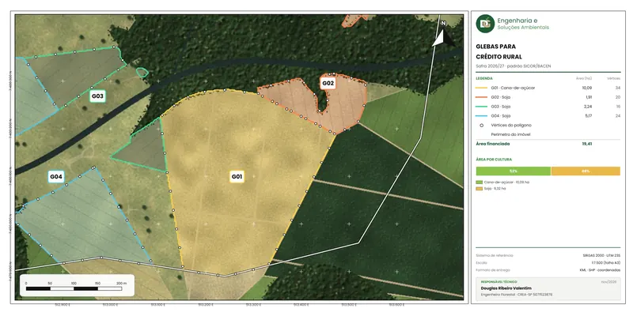
Georreferenciamento para crédito rural
Polígonos das glebas no padrão SICOR/BACEN.
Saiba mais
Laudo de APP e Reserva Legal
Delimitação, passivo e plano de regularização.
Saiba mais
Perícia ambiental e assistência técnica
Pareceres e análise histórica por satélite.
Saiba maisMonitoramento de desmatamento
Origem livre de desmatamento comprovada.
Saiba mais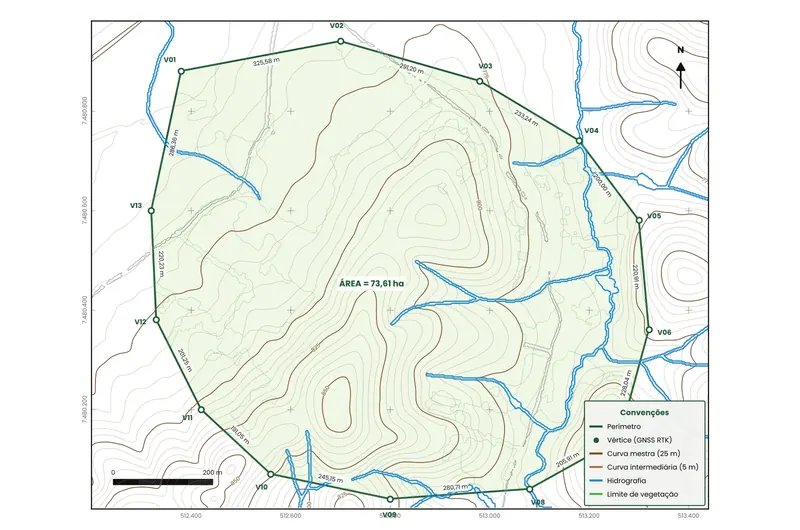
Levantamento planialtimétrico e memorial descritivo
Topografia com GNSS RTK para cartório e prefeitura.
Saiba mais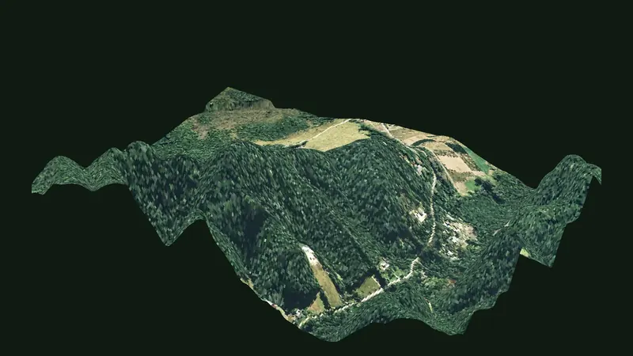
Mapeamento com drone
Ortomosaico, MDS/MDT e curvas de nível.
Saiba mais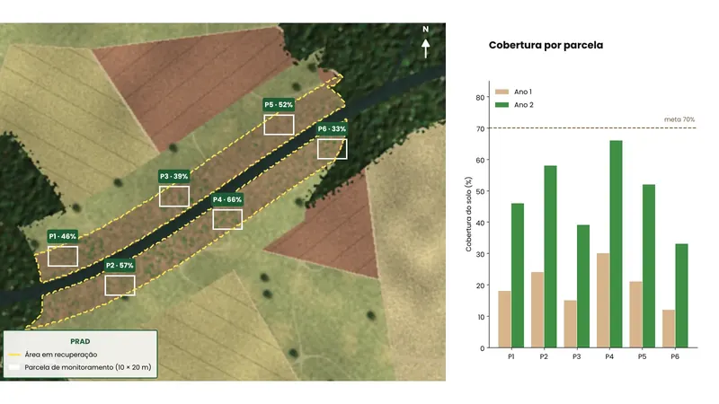
Monitoramento de PRAD
Relatórios de recuperação de áreas degradadas.
Saiba mais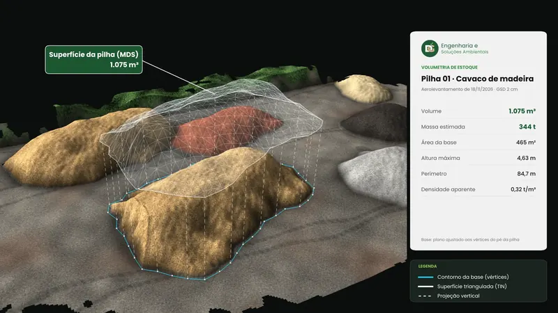
Volumetria de pilhas
Volume de estoques medido com drone.
Saiba maisExplore um mapa
Ligue e desligue as camadas e veja o que entregamos em cada serviço.
Base
Camadas

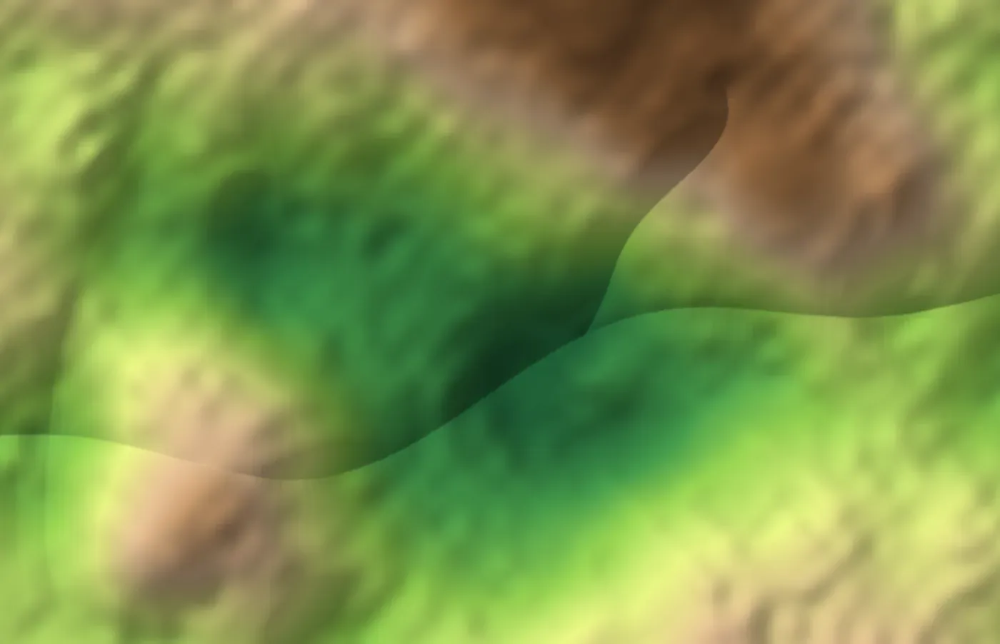


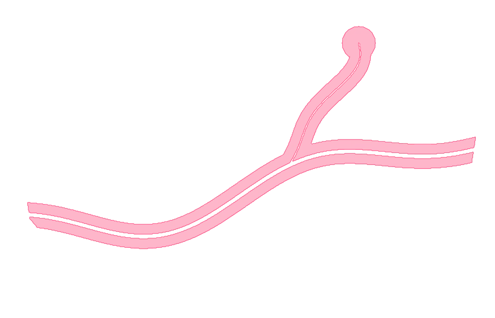

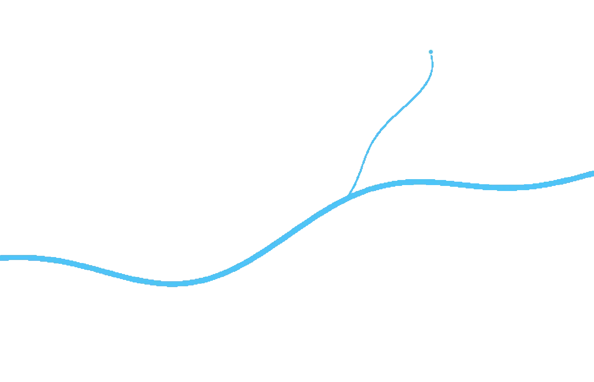

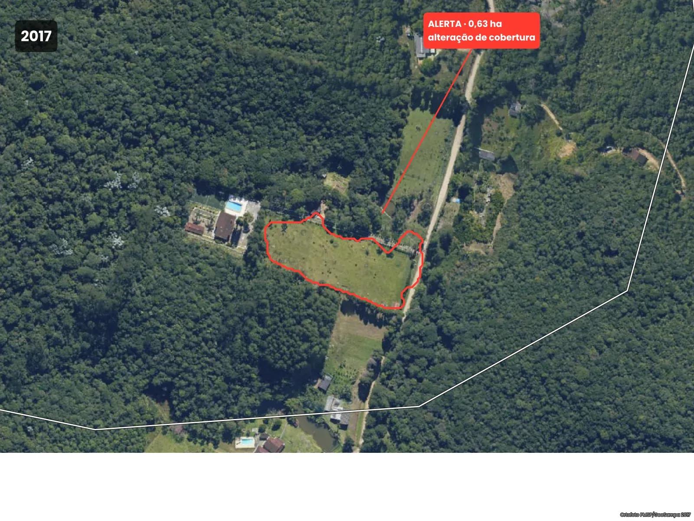
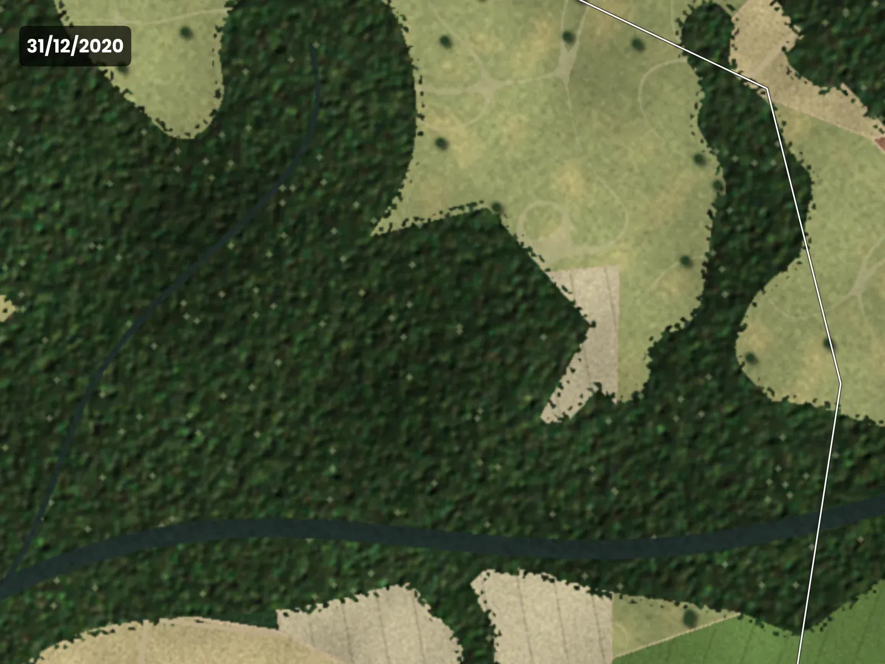
AntesDepoisArraste e compare
Detecção de supressão de vegetação por imagens de satélite, com alerta georreferenciado e relatório por imóvel.
- Comprovação de origem livre de desmatamento
- Data de corte definida (ex.: 31/12/2020 – EUDR)
- Série histórica para perícias e defesas
Quem atendemos
Produtores rurais
Bancos e cooperativas
Advogados e contadores
Indústrias e biomassa
Loteamentos e condomínios
Tradings e compradores
Do contato à entrega
Você envia a localização do imóvel e o que precisa pelo WhatsApp ou e-mail.
Proposta com escopo, prazo e valor fechados. Sem custos extras no caminho.
Análise de imagens e bases oficiais. Campo com GNSS RTK e drone quando necessário.
Laudo ou planta assinados com ART e arquivos prontos para banco, cartório ou SICAR.
Exemplos de produtos
 Uso do solo e quadro de áreas – ITR
Uso do solo e quadro de áreas – ITR
 Feições do CAR
Modelo 3D a partir de drone
Glebas para crédito rural
Planta planialtimétrica
Feições do CAR
Modelo 3D a partir de drone
Glebas para crédito rural
Planta planialtimétrica
 Levantamento GNSS RTK
Levantamento GNSS RTK
 Diagnóstico de APP e Reserva Legal
Volumetria de pilhas
Diagnóstico de APP e Reserva Legal
Volumetria de pilhas
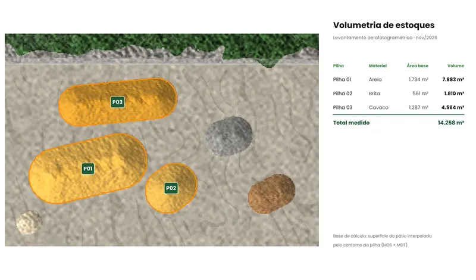
Relatório de volumetria Série histórica – perícia
Série histórica – perícia
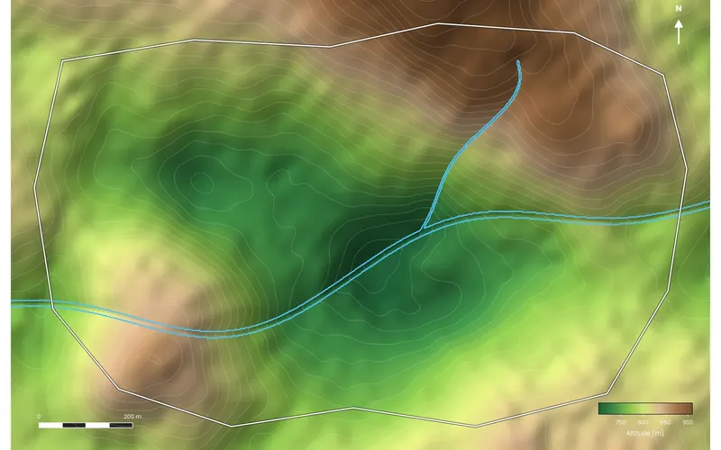
Modelo digital de terreno Monitoramento de PRAD Aerolevantamento com drone
Aerolevantamento com drone
Tecnologia e equipe
Sensoriamento remoto
Imagens de satélite atuais e históricas para análise de uso do solo e monitoramento.

GPS e GNSS RTK
Medição de vértices e pontos de controle com precisão centimétrica.

Drones
Aerolevantamentos para ortomosaicos, modelos 3D, curvas de nível e volumetria.
Softwares de geoprocessamento
Processamento, análise espacial e mapas a partir de bases oficiais e dados de campo.
Corpo de engenheiros
Equipe técnica habilitada, com ART em todos os trabalhos.
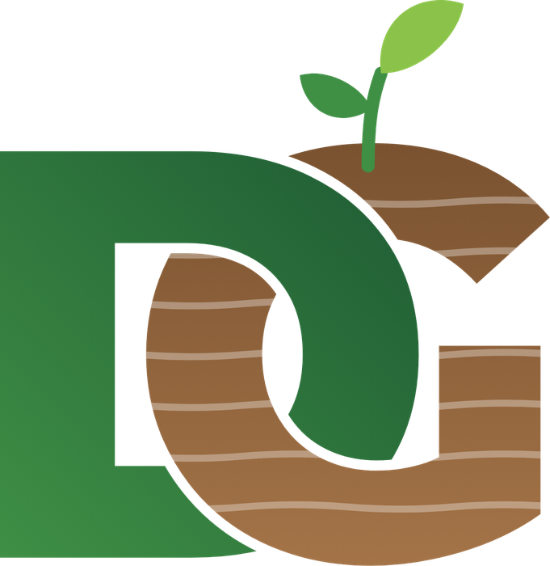
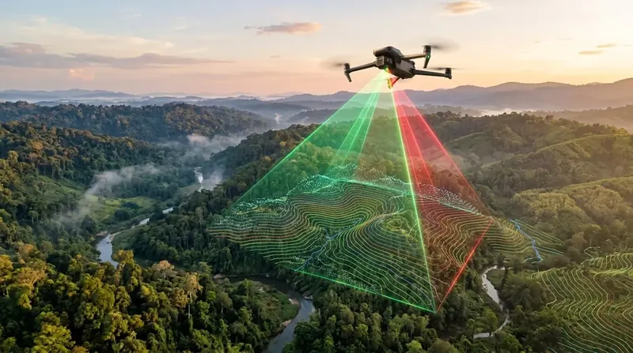
Engenharia, agro e meio ambiente
A DG Engenharia e Soluções Ambientais realiza laudos, validações, regularização ambiental e levantamentos para o agro, empresas, escritórios e loteamentos.
Todos os trabalhos têm responsável técnico habilitado e ART.
Precisa de vistoria no imóvel?
ITR, CAR, crédito rural e monitoramento partem de imagens e documentos. A vistoria entra quando necessária. Topografia, drone e volumetria são feitos em campo.
Quais documentos enviar para o orçamento?
Matrícula ou CCIR, recibo do CAR, arquivo KML/SHP ou a localização do imóvel.
Qual o prazo e o valor?
Dependem da área e do serviço. A proposta traz valor e prazo fechados.
Quais regiões são atendidas?
Campo em São Paulo e região. Serviços remotos podem atender outras localidades.
Os trabalhos têm ART?
Sim, todos os laudos, plantas e relatórios.
Em quais formatos são as entregas?
PDF assinado, SHP, KML, DWG, GeoTIFF e planilha de coordenadas, conforme o serviço.
Solicite uma proposta técnica
Envie a localização do imóvel e o que precisa. Retornamos com escopo, prazo e valor.